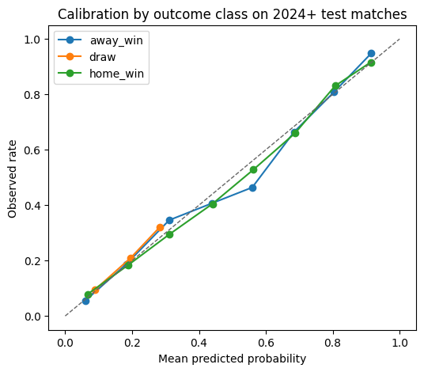

Các trận trước năm 2024 dùng để train; các trận từ năm 2024 trở đi dùng để test. Elo của mỗi dòng đã được ghi trước trận, nên phép đánh giá tương ứng với dự báo tuần tự theo thời gian.
Brier score and calibration bins show whether probabilities are usable as probabilities, not only as class labels.
Code
best_model_name ="elo_neutral_and_form"best_features = candidate_features[best_model_name]best_model = validation_models[best_model_name]classes = classifier_classes(best_model)test_probabilities = best_model.predict_proba(test[best_features])calibration = calibration_table(test["outcome"], test_probabilities, classes, n_bins=8)fig, ax = plt.subplots(figsize=(6, 5))for outcome in classes: subset = calibration[calibration["class"].eq(outcome)] ax.plot( subset["mean_predicted"], subset["observed_rate"], marker="o", linewidth=1.5, label=outcome, )ax.plot([0, 1], [0, 1], linestyle="--", color="#666666", linewidth=1)ax.set_xlabel("Mean predicted probability")ax.set_ylabel("Observed rate")ax.set_title("Calibration by outcome class on 2024+ test matches")ax.legend(frameon=True)plt.show()calibration.head(12)

class
bin_low
bin_high
n
mean_predicted
observed_rate
0
away_win
0.000
0.125
568
0.059596
0.054577
1
away_win
0.125
0.250
422
0.182695
0.187204
2
away_win
0.250
0.375
263
0.311114
0.346008
3
away_win
0.375
0.500
214
0.438245
0.406542
4
away_win
0.500
0.625
181
0.559355
0.464088
5
away_win
0.625
0.750
131
0.684257
0.664122
6
away_win
0.750
0.875
94
0.803949
0.808511
7
away_win
0.875
1.000
39
0.915675
0.948718
8
draw
0.000
0.125
235
0.087856
0.093617
9
draw
0.125
0.250
1031
0.195578
0.209505
10
draw
0.250
0.375
646
0.283811
0.321981
11
home_win
0.000
0.125
217
0.066533
0.078341
Model phân loại cuối cùng
Model cuối giữ neutral và form 5 trận gần nhất vì chúng cải thiện log loss trên tập test theo thời gian, đặc biệt ở sân trung lập. Dữ liệu cũ được giảm trọng số với half-life 4 năm. Sau khi đánh giá, model được refit bằng toàn bộ trận đã đá.
Logistic Regression chỉ tạo kết quả thắng/hòa/thua nên không đủ để xếp hạng khi bằng điểm. Hai Poisson Regression dưới đây dự đoán số bàn của đội nhà và đội khách; nhờ đó mô phỏng có thể tính hiệu số và bàn thắng.
C:\Users\khanh\AppData\Roaming\Python\Python314\site-packages\joblib\externals\loky\backend\context.py:131: UserWarning: Could not find the number of physical cores for the following reason:
found 0 physical cores < 1
Returning the number of logical cores instead. You can silence this warning by setting LOKY_MAX_CPU_COUNT to the number of cores you want to use.
warnings.warn(
File "C:\Users\khanh\AppData\Roaming\Python\Python314\site-packages\joblib\externals\loky\backend\context.py", line 255, in _count_physical_cores
raise ValueError(f"found {cpu_count_physical} physical cores < 1")
Code
wc_played_all = df_recent[ df_recent["tournament"].eq("FIFA World Cup")& df_recent["date"].ge("2026-01-01")].copy()wc_upcoming_all = upcoming_matches[ upcoming_matches["tournament"].eq("FIFA World Cup")].copy()# 72 trận đầu tiên của World Cup 2026 là vòng bảng.wc_group_matches = ( pd.concat([wc_played_all, wc_upcoming_all], ignore_index=True, sort=False) .sort_values(["date", "home_team", "away_team"]) .head(72) .reset_index(drop=True))wc2026_played = wc_group_matches.dropna(subset=["home_score", "away_score"]).copy()wc2026_upcoming = wc_group_matches[ wc_group_matches[["home_score", "away_score"]].isna().any(axis=1)].copy()assertlen(wc_group_matches) ==72assert wc2026_upcoming["tournament"].eq("FIFA World Cup").all()print("Đã đá:", len(wc2026_played), "| Chưa đá:", len(wc2026_upcoming))
Đã đá: 40 | Chưa đá: 32
Code
opponents = defaultdict(set)for row in wc_group_matches.itertuples(index=False): opponents[row.home_team].add(row.away_team) opponents[row.away_team].add(row.home_team)unvisited =set(opponents)groups = []while unvisited: start = unvisited.pop() component = {start} stack = [start]while stack: team = stack.pop() new_teams = opponents[team] - component component.update(new_teams) unvisited.difference_update(new_teams) stack.extend(new_teams) groups.append(tuple(sorted(component)))groups =sorted(groups, key=lambda group: group[0])assertlen(groups) ==12andall(len(group) ==4for group in groups)for number, group inenumerate(groups, start=1):print(number, group)
Thứ tự được xét theo điểm, hiệu số và bàn thắng; nếu vẫn bằng nhau thì xét thành tích đối đầu giữa các đội đang hòa. Dữ liệu không có điểm fair-play, nên trường hợp vẫn hòa tuyệt đối được xử lý bằng bốc thăm có seed thay vì phụ thuộc vào thứ tự ngẫu nhiên của set.
Code
# Group ranking helpers are imported from wc2026_predictor.simulation.# They are kept in src/ so scripts, tests, and notebooks all use the same tie-break behavior.
Code
group_data = []for group in groups: played = wc2026_played[ wc2026_played["home_team"].isin(group)& wc2026_played["away_team"].isin(group) ] future = wc2026_upcoming[ wc2026_upcoming["home_team"].isin(group)& wc2026_upcoming["away_team"].isin(group) ] played_results = [ (row.home_team, row.away_team, int(row.home_score), int(row.away_score))for row in played.itertuples(index=False) ] future_matches = [ (row.home_team, row.away_team, row.home_goal_rate, row.away_goal_rate)for row in future.itertuples(index=False) ] group_data.append({"teams": group, "played": played_results, "future": future_matches})assertsum(len(item["played"]) +len(item["future"]) for item in group_data) ==72
Code
def simulate_group(group_info, rng): results =list(group_info["played"])for home, away, home_rate, away_rate in group_info["future"]: home_goals =int(rng.poisson(home_rate)) away_goals =int(rng.poisson(away_rate)) results.append((home, away, home_goals, away_goals))return rank_group(group_info["teams"], results, rng)def run_group_stage(group_data, rng): standings = [simulate_group(group_info, rng) for group_info in group_data] first_place = [table[0]["team"] for table in standings] second_place = [table[1]["team"] for table in standings] third_place = [table[2] for table in standings] third_lottery = {row["team"]: rng.random() for row in third_place} third_place.sort( key=lambda row: (row["points"], row["gd"], row["gf"], third_lottery[row["team"]]), reverse=True, ) qualified =set(first_place + second_place + [row["team"] for row in third_place[:8]])assertlen(qualified) ==32return qualified
Code
N_SIMULATIONS =10_000rng = np.random.default_rng(42)advance_count = {team: 0for group in groups for team in group}for _ inrange(N_SIMULATIONS):for team in run_group_stage(group_data, rng): advance_count[team] +=1advance_probabilities = ( pd.DataFrame({"team": list(advance_count),"advance_probability": [count / N_SIMULATIONS for count in advance_count.values()], }) .sort_values("advance_probability", ascending=False) .reset_index(drop=True))advance_probabilities
team
advance_probability
0
United States
1.0000
1
Switzerland
1.0000
2
Canada
1.0000
3
Egypt
1.0000
4
Germany
1.0000
5
Spain
1.0000
6
Morocco
1.0000
7
Brazil
1.0000
8
Japan
1.0000
9
Mexico
1.0000
10
Netherlands
1.0000
11
France
0.9959
12
Argentina
0.9934
13
England
0.9934
14
Norway
0.9813
15
Australia
0.9784
16
South Korea
0.9660
17
Ivory Coast
0.9579
18
Colombia
0.9414
19
Austria
0.9285
20
Scotland
0.9021
21
Sweden
0.8350
22
Portugal
0.8064
23
Iran
0.7790
24
Belgium
0.7666
25
Ghana
0.7580
26
Paraguay
0.6427
27
Cape Verde
0.5846
28
DR Congo
0.5757
29
Senegal
0.5743
30
Croatia
0.5709
31
Panama
0.4909
32
Qatar
0.4876
33
Uzbekistan
0.4667
34
Algeria
0.4372
35
Jordan
0.4372
36
Saudi Arabia
0.4302
37
Uruguay
0.3906
38
Bosnia and Herzegovina
0.2538
39
New Zealand
0.2388
40
Iraq
0.1920
41
Ecuador
0.1785
42
South Africa
0.1715
43
Curaçao
0.1371
44
Czech Republic
0.0785
45
Turkey
0.0684
46
Haiti
0.0092
47
Tunisia
0.0003
Giới hạn còn lại
Đây vẫn là model gọn: số bàn của hai đội được mô phỏng độc lập, chưa có chấn thương/đội hình và dữ liệu không có điểm fair-play. Tuy vậy, kết quả không còn bị quyết định bởi thứ tự của set, trận chưa đá không bị coi là hòa, và model triển khai đã được refit bằng toàn bộ dữ liệu đã biết.